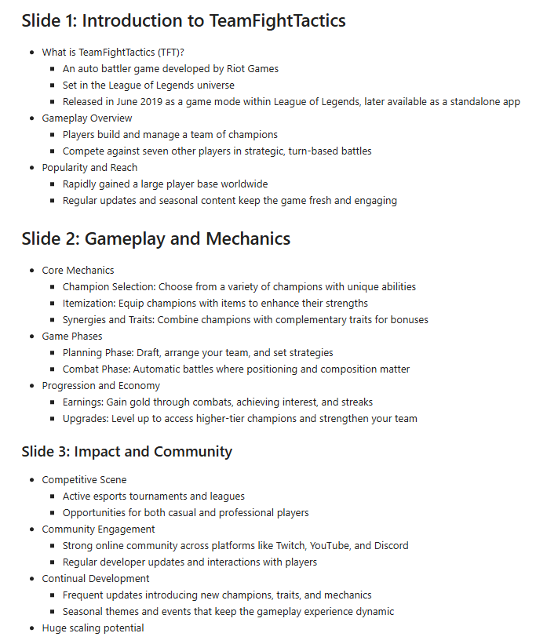
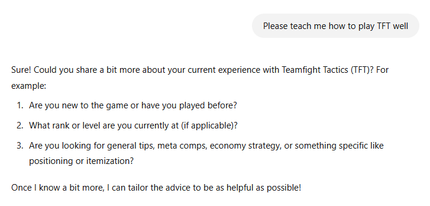

Presentation on TFT… but w/ deep research
Exploring Deep Research
In the beginning of February, OpenAI announced Deep Research, a feature designed for GPT to scrape the web and compile an cited, in-depth report on a certain topic. As a GPT Plus user (best #20 a month I’ve ever spent), I get access to a few query a month. Thus, I have taken it upon myself to check out the feature and write about it.
Remember the in-class presentation assignment where we had AI create a presentation and we had to attempt to present it? Back then, I wrote about Teamfight Tactics (TFT), a strategy game I enjoy. Below is an attached photo of what I had generated and presented.

I’ll be honest, the generated content wasn’t well made; it was too general, slightly outdated, and had a lot of ‘fun-fact’ content rather than informative. Now let’s see how the Deep Research feature fares against the task!
Deep Research Prompting
I began by simply asking below, and it responded by asking for some more information to create a more stricter output. This honestly makes sense because I was skeptical that it would inititate some sort of ‘deep research’ only with one simple query.

The Response
Since the response is so large, I’ll spare this blog the screenshots and link a copy of the response here.
Reading through this as a long-time TFT player, I’ll be honest, I was pretty impressed with the quality and depth of the answer. Typically, TFT has a rotating sets, so every few monthes the units in the game change, while the game mechanics largely stay the same. I prompted GPT to focus more on teaching the underlying game mechanics rather than reflecting the current set, and the writeup produced is incredible pedagogical. It goes through the concepts in an intuitive order rather than throwing it all at you. For example, you need to understand economy and rerolling before you can understand compositions and playstyles, giving me the impression that GPT had a thorough understanding of the gameplay. The sources used were also well-cited and from websites that I recognize.
All in all, I think this was a really impressive feature, and I think the potential of this feature is limitless.
Reflecting
Honestly, I think agentic AI tools like this are the future. LLMs have shown themselves to be jack of all trades (or damn near masters) but unable to put in the last mile on some tasks. By supercharging LLMs to do certain tasks, in this case, a research report.
I also think this tool synergizes incredibly well with OpenAI’s future research – imagine an AI that’s able take much longer by thinking, gathering information in a structured way, and iteratively taking however long it needs to complete a task… I don’t think I’d call that AGI, but it’d definitely be powerful advancement. By buliding Deep Research, and understanding its strengthes and flaws, I’m sure OpenAI can inch ever closer to their ambitious goals of AGI (though we can have another blog on if I personally think that’s even possible).